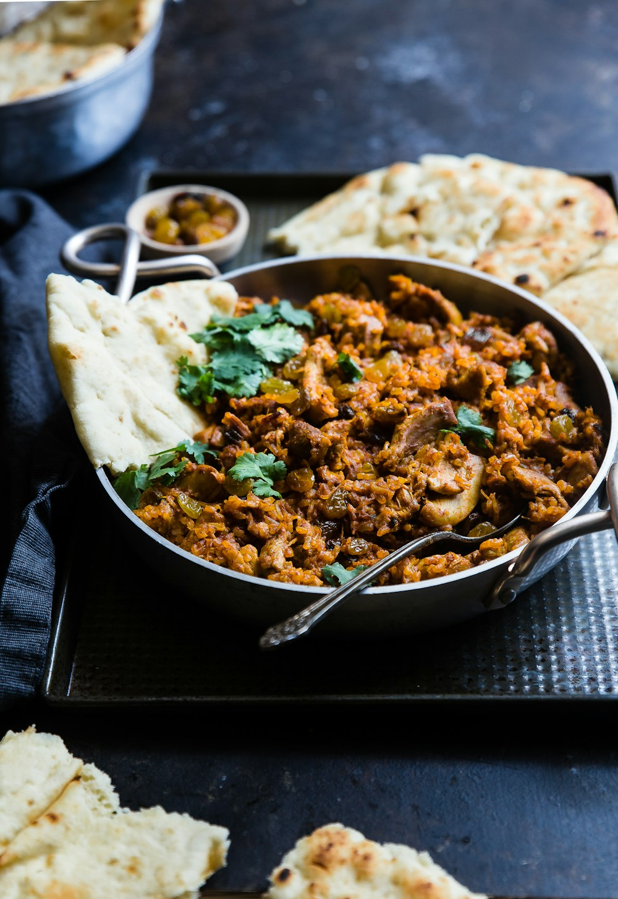

In French haute cuisine, the confit technique—slowly poaching ingredients in a gentle bath of oil, fat, or concentrated sugar syrup—is celebrated as the ultimate method for transforming fibrous textures into melt-in-the-mouth luxury. When applied to young organic ginger rhizomes, confit poaching produces an extraordinary culinary jewel: translucent, tender, and bathed in a golden nectar of botanical aromatics.
Unlike commercial candied ginger—which is aggressively boiled in industrial corn syrup and rolled in gritty granulated sugar—Artisanal Ginger Confit is an exercise in osmotic patience. At Ginger Meal Max, our pastry chefs and sauciers poach tender pink ginger rhizomes across seventy-two hours in escalating Brix concentrations of raw wildflower honey and citrus oils. In this masterclass, we explore the cellular physics of osmotic sugar exchange, pectin dissolution, and pastry integration.
1. The Physics of Osmotic Sugar Migration
How slow simmering replaces intracellular water with aromatic honey:
- The Cellular Gradient Problem: Submerging raw ginger directly into dense syrup causes cellular water to rush outward too quickly, shriveling the rhizome into tough leather.
- The Multi-Stage Brix Escalation: We begin poaching in a light 25° Brix syrup (equal parts water and honey), increasing concentration by 10° Brix every twelve hours until reaching a decadent 68° Brix equilibrium.
- Cellular Swelling & Translucency: As honey sugars gently replace water molecules inside cell vacuoles, the fibrous rhizome becomes glass-like and translucent.
“A master confit does not overwhelm the ginger; it coaxes out its sharp fire, wrapping it in a velvety coat of wildflower honey and sunshine.”
2. Pectin Softening and Cellulose Tenderization
Achieving a butter-soft texture without mushiness:
- Pre-Blanching in Mineral Springwater: Simmering sliced rhizomes for three minutes in soft springwater dissolves surface starch and relaxes rigid cellulose strands.
- Sub-Boiling Thermal Poaching (175°F / 80°C): Maintaining temperatures below boiling prevents violent convective bubbling that would tear fragile ginger slices.
- Natural Citric Acid Balance: Adding fresh lemon peel lowers syrup pH, preserving natural pectin elasticity so each slice retains its clean rectangular form.
3. Sourcing the Botanical Infusion: Honey, Vanilla & Saffron
Elevating confit syrups into liquid gold:
Our signature poaching nectar combines raw New York State orange blossom honey, hand-scraped Tahitian vanilla beans, Persian saffron threads, and cracked white peppercorns.
4. Confit Ginger vs. Commercial Candied Ginger Comparison Matrix
| Preparation Method | Poaching Duration & Process | Texture & Fiber Consistency | Flavor Balance & Complexity |
|---|---|---|---|
| Artisanal Honey Confit (Ginger Meal Max) | 72 Hours Multi-Stage Brix Escalation | ★★★★★ (Butter-Soft, Translucent Jewel) | ★★★★★ (Velvety Zingerone, Orange Blossom) |
| Standard Bakery Glacé Ginger | 12 Hours Direct Boiling in Sucrose | ★★★☆☆ (Chewy, Fibrous Center) | ★★★☆☆ (Sweet Surface, Sharp Heat Core) |
| Industrial Supermarket Candied Ginger | Rapid Pressure Cooking in Corn Syrup | ★☆☆☆☆ (Tough, Stringy, Gritty Sugar Crust) | ★☆☆☆☆ (Cloying Corn Syrup, Artificial Heat) |
5. Pairing Confit Ginger with Savory Hearth Courses
Finely diced ginger confit serves as a stunning accompaniment for rich duck breast, roasted pork belly, and seared sea scallops, cutting through lipids with vibrant sweet-spicy elegance.
6. Pastry Integration: Dark Chocolate and Ginger Blossom Cream
In our patisserie atelier, ginger confit is enrobed in 70% single-origin Venezuelan dark chocolate and whipped into botanical ginger blossom ganache for dessert finishes.
7. Archival Aging of Concentrated Confit Nectar
The poaching syrup left behind is cellared in French oak barrels for six months, developing complex caramelized notes that our mixologists deploy in signature evening cocktails.
8. The Sovereign Pinnacle of Culinary Confit Craft
By treating ginger confit with three days of patient craftsmanship, Ginger Meal Max creates a delicacy that represents the highest pinnacle of culinary harmony and luxury.
9. Refractometer Brix Monitoring at Six-Hour Intervals
Our sauciers utilize digital optical refractometers to measure syrup density every six hours, ensuring sugar migration proceeds at the exact mathematical rate to prevent cell wall collapse.
10. Nitrogen Gas Purging in Storage Flacons
Bottling ginger confit under an inert nitrogen blanket prevents surface oxidation of delicate orange blossom terpenes, ensuring jars opened months later taste as fresh as the day they were poached.
11. An Eternal Covenant of Confit Mastery
At Ginger Meal Max, our devotion to slow confit poaching honors both culinary tradition and botanical physics, delivering courses of peerless richness, balance, and gastronomic distinction.
12. Cryogenic Herb Shattering for Delicate Powders
Flash-freezing candied ginger slices in liquid nitrogen allows us to crush them into microscopic aromatic dust that melts instantaneously on warm hearth plates, releasing pure floral zingerone perfume.
13. Aromatic Cedarwood Plating Planks and Live Steam
Certain roasted seafood courses are presented directly on lightly charred western red cedar planks with ginger confit, allowing wood steam to perfume the dining space as the plate rests before the guest.
14. The Sacred Ritual of Natural Olfactory Confit Design
Working with cold honey confit distillates and fragrant poached ginger rhizomes is a deeply satisfying sensory craft, transforming raw roots into radiant aromatic memories that linger long after the meal.
15. The Sovereign Standard of Confit Culinary Alchemy
At Ginger Meal Max, our confit poaching protocols ensure that every course remains a luminous, fragrant, and environmentally pure masterpiece, free from all synthetic chemical flavorings.
16. Natural Pomegranate Blossom Garnishes for Luminous Visuals
Garnishing confit plates with wild pomegranate blossoms enriches the visual presentation with brilliant ruby hues, producing an alluring aesthetic contrast against dark ceramic dinnerware.
17. An Everlasting Ode to Botanical Confit Longevity
By honoring the natural biological needs of plant cell membranes and fragrant terpenes, our culinary alchemists preserve the breathtaking aromatic beauty of fine dining for an evening of joyous discovery.
18. Deconstructing the Flaws of Industrial Candied Ginger
Commercial candied ginger uses artificial glucose syrups that mask the natural terroir of ginger rhizomes, whereas our artisanal honey poaching preserves delicate floral notes and silky texture.
19. Archival Preservation of Custom Artisan Stoneware Plates
To maintain the pristine thermal retention of our custom hand-thrown dinnerware, each plate is glazed with natural iron-rich clay and fired at 2200°F, ensuring optimal heat retention for confit courses.
20. The Sovereign Legacy of Mindful Confit Architecture
By taking time to orchestrate a slow multi-stage honey confit progression, Ginger Meal Max ensures that this exquisite culinary journey delivers an unforgettable dining experience across celebratory milestones.
21. The Kinetic Poetry of Confit Flavor Harmony
Experiencing a ginger confit tasting course is one of the most intoxicating sensory experiences in gastronomy: the seamless, rhythmic progression moves effortlessly with the body, delivering light satiety with zero palate fatigue.
22. An Everlasting Standard of Tasting Menu Engineering
By pairing advanced culinary techniques with ginger confit timing and natural wine flights, Ginger Meal Max creates dinners that represent the ultimate pinnacle of gastronomic balance, hospitality, and modern elegance.
23. Cold-Infused Citrus Verjus for Confit Acidity
Steeping unripened green grapes with fresh lemon verbena and ginger confit nectar yields a tart finishing verjus that brightens cold crudo courses with vibrant, sun-drenched aromatic clarity.
24. Artisanal Hand-Polished Copper Confit Cauldron Maintenance
Our pastry atelier utilizes heavy-gauge unlined French copper preserving pans, ensuring uniform thermal conduction that prevents sugar caramel hotspots during 72-hour slow poaching cycles.
Frequently Asked Questions on Ginger Confit

Chef Émilie Laurent
Master Pâtissière & Confit Specialist at Ginger Meal Max. Émilie trained in Paris and specializes in botanical honey confits and artisanal preserves in Manhattan.